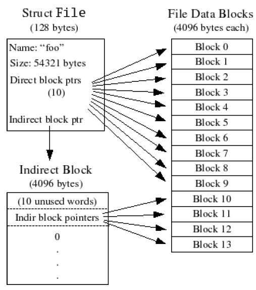

Intro
一个基于微内核思想的文件系统:
一个进程负责对文件系统的存取等访问操作.
如果一个用户进程要进行文件操作, 它通过IPC来向负责文件系统访问的进程发出相应的请求,
由其进行相应的操作并将结果返回给提出请求的进程. 内核只负责进程间通信, 并不对文件系统进行访问.
接收信息的进程(用户进程)首先标明自己处于接收信息的状态, 然后在PCB中标明接收到的内存页面被映射到自身地址空间的虚拟地址;
发送信息的进程(文件服务进程)将自身的地址空间的一页映射到接收进程的虚拟地址上
对系统的IPC机制的要求: IPC可以传送一个32位的整数及一页内存.
负责文件系统访问的程序在fs/serv.c中. 系统运行时, 创建一个文件服务进程.
它首先完成一些文件系统的初始化工作, 读入文件系统的超级块(super block),
读入文件系统的位图(bit map，负责维护系统的空闲块);
然后等其它用户进程的请求.
需要进行文件系统访问的用户进程通过IPC向服务程序提出请求,
服务程序根据接收到的值及内存页面得到参数进行相应的操作,
再将结果通过IPC传给提出请求的进程.
The File System Server
On-Disk File System Structure
文件系统的结构规范可参见lab5.pdf. 概括的说, 重点是以下几点:
1. 该文件系统的一个block为4096字节
2. Block 1为Super Block. (Block 0一般用于存放启动代码)
3. Block 1之后若干block是文件系统的bitmap
4. 每个文件(包括常规文件及目录)都有一个File结构描述(inc/fs.h)描述了文件名字,大小,类型及其数据所占的block.
对于目录而言,其数据为该目录下的常规文件或目录的File结构. 如果一个文件的数据块较多的话可能有间接块. 间接块存放的是文件的数据块的块号.

Disk Access
文件系统服务程序是通过IO操作来读写磁盘的, 因此文件系统服务进程必须要有IO权限.这是通过状态寄存器来控制的.
因此在产生文件系统服务进程时, 必须设置其eflags寄存器的相应的位(inc/mmu.h中定义的FL_IOPL0与FL_IOPL1).
根据文件系统的规范, 文件系统的一个块与内存中一页的大小是一样大的.
该文件系统服务进程将整个硬盘映射到其地址空间的一部分(从DISKMAP到DISKMAP+DISKMAX(fs/fs.h)), 每一磁盘块对应一内存页.
因此,系统支持最大为DISKMAX(3G)大的硬盘.
这样系统可以根据文件系统服务进程的内存映射情况来判断磁盘的访问情况.
系统必须维护空闲块位图. 通过适当的移位和与或操作可以完成对一个块对应的位的存取.
例如，第i块的状态由表达式bitmap[i/32]&(1<<(i%32))计算, 其中bitmap为位图数组,
read_bitmap()(fs/fs.c)将磁盘上保存的信息读到其中, 每个元素大小为32位
文件存取操作的函数在fs/fs.c文件中定义, 主要是对数据结构File的操作. 主要的操作有：
1. file_open 根据文件名找到其File结构
2. file_create 根据文件名创建一个文件(在其父目录的数据块中增加一个File结构)
3. file_get_block 将文件的某一块读入内存
4. file_truncate 将文件缩短, 并释放多余的磁盘块
5. file_flush ：将文件中改动了的内容写入磁盘
文件服务进程不对文件进行read和write, 通过IPC机制将内存页面映射到用户进程, 用户进程即可对其进行read与write
该文件系统支持的文件最大可以为1024*4096=4M
用户进程为每个打开的文件保留4M的地址空间(从FILEBASE开始,在user/file.c中定义),
一个进程总共可以同时打开MAXFD(在user/file.c中定义)个文件
如果一个进程要打开一个文件, 它首先要通过fd_alloc函数申请一个Fileinfo结构
(user/file.c中定义, 描述了一个打开文件的信息, 如被映射到的虚拟地址,打开方式,读写该文件的偏移量等等)
然后通过IPC向文件系统服务进程请求打开文件(调用fsipc_open(), 在user/fsipc.c中定义)并等待消息返回;
文件系统服务进程接收到请求后(fs/serv.c中的serve()), 根据参数调用serve_open(),
完成相应的功能后通过IPC将结果返回给提出请求的进程(那个进程正在等待结果), 文件打开请求完成.
如果一个进程要关闭一个文件, 它首先根据文件的fd(即该文件在该进程打开文件表中的索引)找到对应的Fileinfo结构,
然后检查对应的地址空间, 将所有dirty的页面通知文件系统服务进程(通过IPC),
然后通过IPC向文件系统服务进程请求关闭文件(调用fsipc_close(), 在user/fsipc.c中定义)并等待消息返回;
文件系统服务进程接收到请求后(fs/serv.c中的serve()), 根据参数调用serve_close(), 完成相应的功能后通过IPC将结果返回给提出请求的进程, 文件关闭请求完成.
Spawning Processes
spawn() 创建一个子进程，设置其堆栈，并加载其代码与数据
通过系统调用sys_set_trapfram设置相应的寄存器的值(esp, eip等), 并且要支持命令行参数(创建子进程时的参数).
命令行参数是通过堆栈传递的(因为父进程为子进程设置堆栈, 因此父进程可以在堆栈中增添参数)
spawn()有两个参数: 要执行的命令的文件的路径及命令行参数
spawn()首先打开该可执行文件, 读取其头信息(该系统的可执行文件是a.out格式，其头结构Aout结构在inc/aout.h中定义),
然后申请一个子进程, 为子进程设置堆栈(申请一页面作子进程的栈并为其设置命令行参数, 通过调用init_stack()),
然后根据打开的可执行文件及获取的其头信息设置代码段和数据段
然后设置子进程esp为父进程设置的堆栈栈顶, eip为0x20+UTEXT, 并设置子进程可运行.
尽管该处像fork一样也有sys_env_alloc(), 但并不像fork()一样在父进程中返回子进程id, 子进程中返回0.
因为父进程与子进程的代码是不一样的
父进程中为子进程设置堆栈时, 首先计算命令行参数的个数, 然后顺序将其拷贝到子进程堆栈中(x86体系结构的堆栈是"向下生长"的, 因此应该从高地址开始) 当然此时"子进程堆栈"只是父进程中的一个页面。
然后依次将各参数的地址压入子进程栈中(这里需要特别注意的是, 这里所说的地址是指参数在子进程堆栈中的地址)， 最后压入参数个数. 最后返回栈顶指针(子进程堆栈栈顶的地址)
该页面应该从父进程的地址空间unmap掉
Bochs
idle进程利用了bochs的iodebug功能; 即通过向0x8A00端口写入相应的命令来影响bochs(这里是让回会到debug状态)
要使bochs有该功能需要在配置时加上—enable-iodebug选项，重新编译安装
Trouble Shooting
增添新磁盘后没有修改bochsrc配置文件